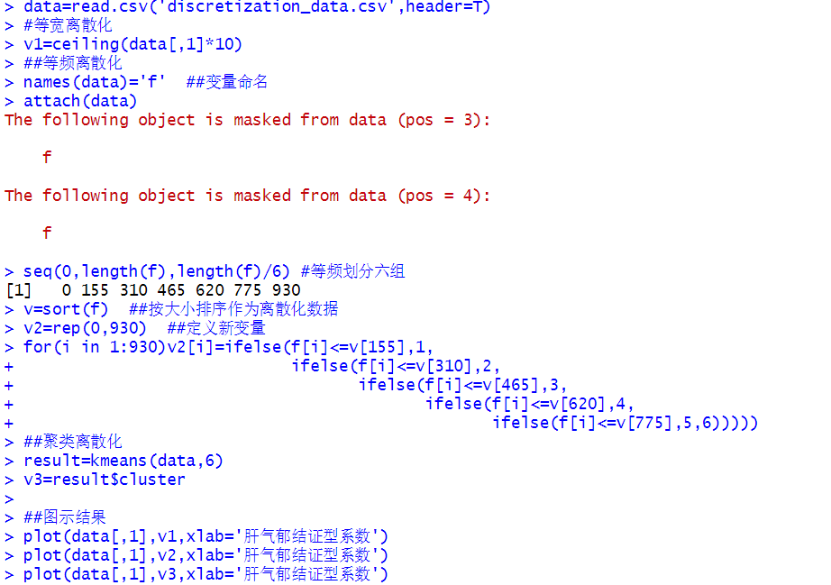
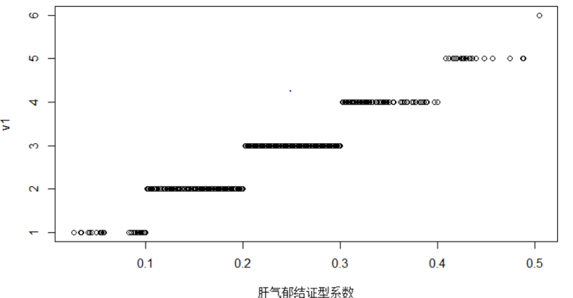
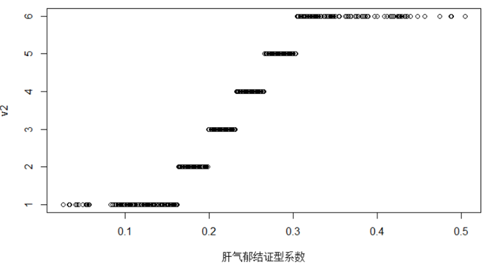
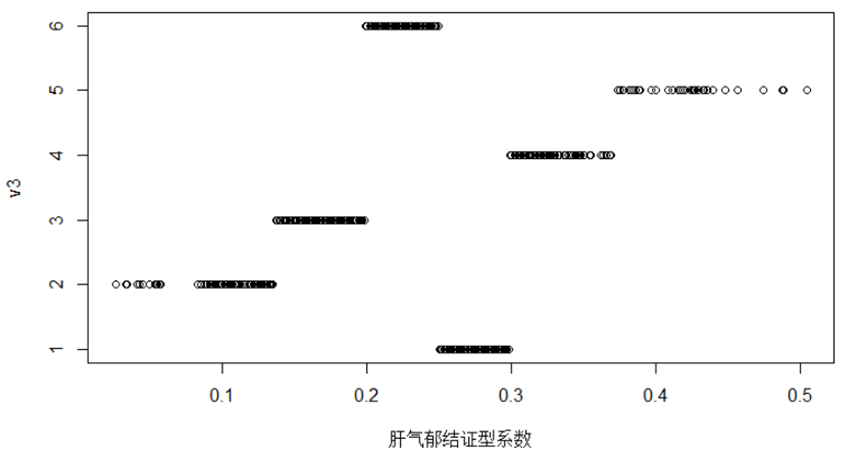

使用等宽法、等频法以及聚类法对“医学中中医型的相关数据”进行连续型数据离散化的对比，该数据的前六行如下表：
中医型的相关数据
肝气郁结系数 0.056 0.488 0.107 0.322 0.242 0.389
运行代码如下：

最终得到三种离散效果图如下：

等宽离散化结果

等频离散化结果

聚类离散化结果
上述操作通过等宽法、等频法以及聚类法实现了数据的离散化，将肝气郁结证型系数成功划分为六组。在进行后续的数据挖掘工作时可以将每一类记为同一个标识，如分别记为A1、A2、A3、A4、A5、A6，再进行建模。